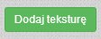

- Aplikacja
- Dokumentacja
- O projekcie
-
Powered by

Dokumentacja
Dokumentacja dotyczy wszystkich funkcjonalności i została napisana, aby przybliżyć użytkownikowi działanie produktu.
| Reprezentacja graficzna | Opis |
|---|---|
 |
Przycisk odpowiadający za dodanie nowego obiektu. |
 |
Przycisk odpowiadający za usunięcie obiektu. Aby usunąć dany obiekt najpierw należy go zaznaczyć. |
 |
Lista rozwijana, z której wybieramy typ obiektu. |
| Przycisk odpowiadający za dodanie źródła światła. | |
 |
Gradient, z którego możemy wybrać kolor obiektu. Aby wybrać kolor danego obiektu najpierw musimy go zaznaczyć. |
|  | Przycisk odpowiedzialny za dodanie (nałożenie) tekstury na obiekt. Aby nałożyć teksturę najpierw musimy zaznaczyć obiekt. |
 |
Przycisk odpowiedzialny za usunięcie wcześniej nałożonej tekstury. Przed operacją należy zaznaczyć obiekt, który posiada tę teksturę. |
| Strzałki odpowiedzialne są za poruszanie obiektem - odpowiednio oznaczają kierunki poruszania. Ikony plus i minus, odpowiadają za przybliżanie oraz oddalanie obiektu. | |
|
Lista rozwijana, z której wybieramy opcję dotyczącą sterowania kamerą. Po wybraniu danej opcji za sterowanie odpowiadają klawisze Q, W, E, A, S, D.
Transponowanie:
Obracanie:
|
|
|
Rozwijany blok dotyczący zmiany wielkości obiektu względem danej osi.
Osie:
|
|
|
Rozwijany blok dotyczący obrotu obiektu względem danej osi.
Osie:
|
|
| Pasek informujący o aktualnie używanym obiekcie. Wyświetlana jest wartość "obj(i)", gdzie i oznacza numer przypisany do danego obiektu. | |
| Przycisk odpowiedzialny za włączenie/wyłączenie światła. | |
| Suwak regulujący przezroczystość wybranej bryły. Przed ustaleniem przezroczystości najpierw musimy zaznaczyć bryłę. | |
|
Myszka |
Przenoszenie obiektu - kliknąć na obiekt, a następnie przytrzymując lewy przycisk myszy przenieść obiekt. Obracanie kamerą - kliknąć na obszar poza obiektem, a następnie przytrzmując lewy przycisk myszy obracać kamerą. Używając scroll'a możemy sterować kamerą (oddalać oraz przybliżać). |